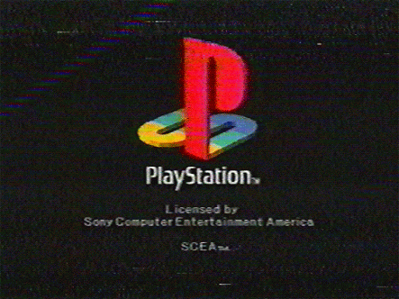
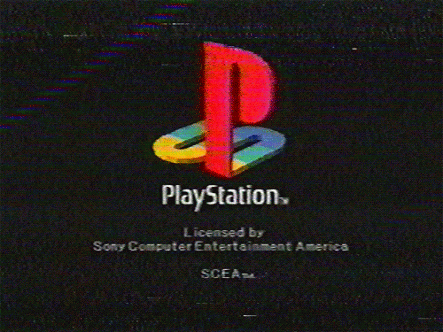

What is it?
Vaporwave, maybe you've overheard some kids talking about it, or some not-so-kids, or maybe you already love it - either way, it's undoubtedly beautiful. It parodies genres like Japanese Funk, Jazz, even Elevator music, and adds samples from 80's hits. This, put through a lethargic-sounding filter, will take you on a nostalgic trip whether you like it or not.
The movement was mainly popularised by an album 'Floral Shoppe' from artist Vektroid, featuring defining songs like 'Lisa Frank 420/Modern Computing'. After this album gained traction, it became an internet meme, causing this new-found love of Vaporwave to become widespread. Listeners then turned to other similar genres like Synthwave, and Chillwave, and even created a new genre: Simpsonwave, which capitalises even further on that feeling of nostalgia by combining vaporwave with scenes from the simpsons.
Vaporwave interests so many because the music, accompanied with 80's VHS-style graphics, leaves you missing an era in which you may never have even existed. It's repetitive, mostly depressing tunes chip away at your existence, and leave you longing for a simpler time. Ironically beautiful.
It's not all sad though, there are some Vaporwave tracks which steer away from the depressing, and more toward the upbeat nostalgia. 'Cherry Pepsi' by Skylar Pence is a great example of this as it subtly achieves the Vaporwave effect, hidden behind a mask of funk.

 
